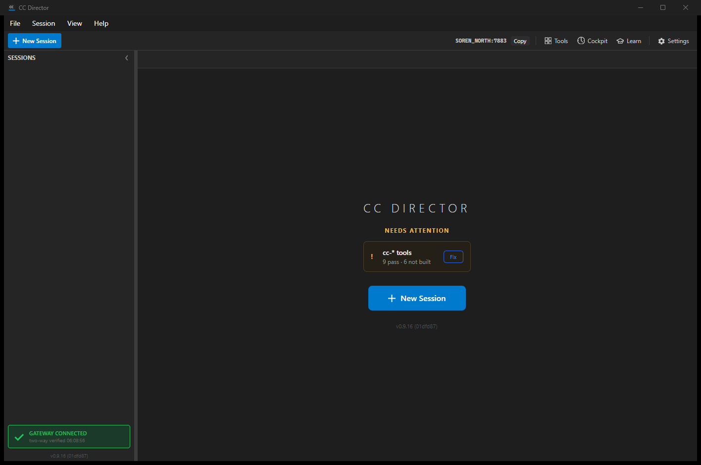

Status: Code and automated tests pass; modal screenshot capture was partially blocked.
Worktree: D:\ReposFred\devthrottle-agent-plugins
Branch: agent-plugin-rollout
Slot used: 14
Scheduled-task QA launch: PID 38960, Control API port 7882, log C:\Users\soren\AppData\Local\cc-director\logs\director\director-2026-06-26-38960.log
AgentPluginRegistry.SettingsTypeOptions, derived from built-in plugin metadata plus Raw CLI as the explicit custom case./settings/agents/catalog type options and display fallback to plugin metadata.AgentToolCatalog reads from the Settings UI/API paths changed by this issue.| Criterion | Result | Evidence |
|---|---|---|
| Type option list, display labels, presets, model metadata, detection eligibility, validation status text, add/edit defaults, and detection wizard suggestions come from plugin metadata. | PASS | Settings type list, wizard model, editor dialog, detection service, and catalog endpoint now use AgentPluginRegistry/IAgentPlugin. |
Settings UI and /settings/agents/catalog do not directly read AgentToolCatalog. |
PASS | rg AgentToolCatalog across the Settings UI/API files returned no matches. |
| Every built-in agent appears in settings from plugin metadata. | PASS | SettingsTypeOptions_ComeFromPluginsPlusRawCliCustomCase covers all built-ins plus Raw CLI. |
| Tests cover the settings metadata path. | PASS | Focused Core and Control API tests pass. |
| QA report includes settings screenshot coverage. | PARTIAL | Captured the slot-14 Settings entry point. The modal did not open through UI automation in this session; the automation blocker is recorded here for QA follow-up. |
Slot-14 Settings entry point, captured from local_builds\cc-director14.exe:

rg -n 'AgentToolCatalog' src/CcDirector.Avalonia/AgentEditorDialog.axaml.cs src/CcDirector.Avalonia/SettingsDialog.axaml.cs src/CcDirector.Avalonia/ToolDetectionWizardDialog.axaml.cs src/CcDirector.Core/Agents/ToolDetectionWizardModel.cs src/CcDirector.ControlApi/AgentsEndpoint.cs src/CcDirector.Core/Settings/ToolDetectionService.cs -S
No matches.
dotnet build cc-director.sln --no-restore
Build succeeded: 0 warnings, 0 errors.
dotnet test src/CcDirector.Core.Tests/CcDirector.Core.Tests.csproj --no-build --filter "FullyQualifiedName~ToolDetectionWizardModelTests|FullyQualifiedName~AgentPluginRegistryTests|FullyQualifiedName~ToolDetectionServiceTests|FullyQualifiedName~AgentToolConfigTests"
Passed: 44, Failed: 0, Skipped: 0.
dotnet test src/CcDirector.Gateway.Tests/CcDirector.Gateway.Tests.csproj --no-build --filter FullyQualifiedName~AgentsEndpointTests
Passed: 18, Failed: 0, Skipped: 0.
powershell -NoProfile -File scripts\agent-session-isolation.ps1 allocate -Worktree D:\ReposFred\devthrottle-agent-plugins powershell -NoProfile -File scripts\local-build-avalonia.ps1 -Slot 14 powershell -NoProfile -File scripts\agent-session-isolation.ps1 launch -Manifest D:\ReposFred\devthrottle-agent-plugins\local_builds\agent-session-slot14.json powershell -NoProfile -File scripts\agent-session-isolation.ps1 teardown -Manifest D:\ReposFred\devthrottle-agent-plugins\local_builds\agent-session-slot14.json
Slot 14 allocated, built, launched on port 7882, and torn down cleanly.
The scheduled-task slot Director launched and served the Control API correctly. Opening the Settings modal through UI automation failed in this session: CcClick returned access denied for the button invoke, and direct mouse clicks did not open the modal. I then started the same slot executable directly for screenshot capture only, captured the Settings entry point, and stopped that process. This leaves the code/test acceptance covered, with full modal screenshots still needed in a QA pass that can interact with the desktop modal.